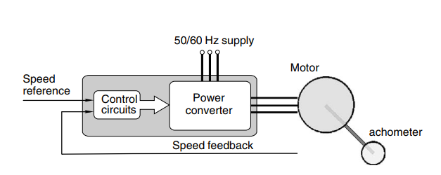
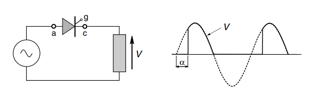
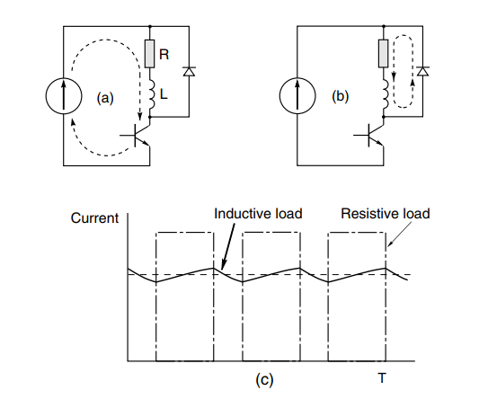
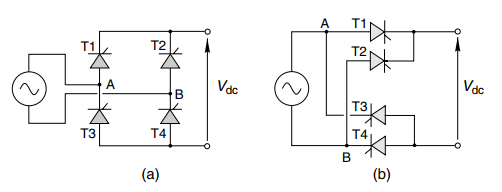
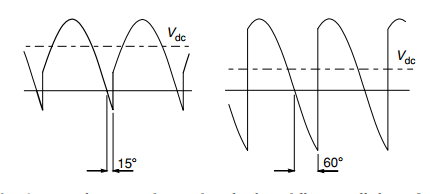
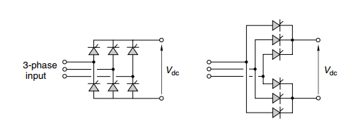
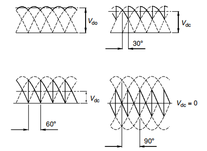
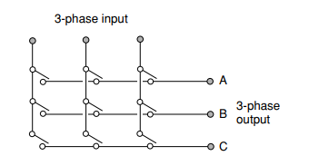
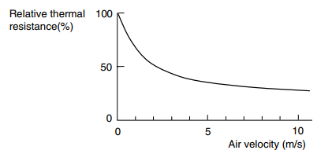

电机与驱动读书笔记（驱动电路）
电机的驱动电路是不存储能量的，然而电机在启动时由于反电动势为0，所以会大幅度拉低电源的输出电压，而影响其他设备使用。于是我们需要一个灵活且可靠的驱动电路。
一般驱动电路由两部分构成：供能部分负责提供电机运行所需的电能，控制部分负责采集电机运行状态数据进而控制功能部分以获得预期的效果。

对于驱动电路来说，最重要的两个特性就是：效率和输出波形的质量。
整流电路
开关器件的导通和截止状态都可以近似地认为消耗的功率为0，而开启和关闭的过程中的损耗则不能忽略不计，于是开关器件的动作频率越快，相对的效率就会越低，发热也就越严重。
一般来说，双极型三极管的基极电流要达到集电极电流的5%~10%，才能使三极管到达饱和状态（电阻近似为0）。因为三极管需要电流维持导通状态，所以效率较低。
- 脉宽调制：PWM，开关闭合的频率一定，但是每次闭合的时间不同，于是输出波形的宽度也不同；
- 频率调制：PFM，开关闭合的时间一定，但是闭合的频率不同，于是输出波形的密度不同。
ACDC 可控整流
晶闸管可以通过门极开启，但是不能主动关断，需要的电流小于维持电流时才能关断。而对于负载是感性器件的电路来说，在输入电压为负的时候，并不能立即关断晶闸管。
如果仅仅需要从交流变化成直流，那么二极管就够了。但是如果还要控制输出电压的话，就需要用到可以按需要导通的器件，例如晶闸管等。根据开启时间就能调整输出电压。

过压保护
主要是针对电枢绕组属于感性器件，在通电期间会储存能量，在突然中断供电时，会产生巨大的感生电压，从而可能破坏电子器件。所以一般可以通过并联二极管来实现过压保护。

单相全桥整流电路
上图中只用到一个半导体器件，结果输出波形最多只能用到输入的一半，效率太低，现实中我们常用单相全桥和三相全桥整流电路，以达到最大的利用率。首先是单相全桥：

阻性负载
假设，便于计算
对于阻性负载来说，当电压为0 时，电流也为0，晶闸管可以顺利关断。于是其输出电压只与开启角度有关。这里有些概念需要澄清一下$：
- 电压有效值，（正弦电压一个周期内）在阻性负载上做同样的功所用到的直流电压值：
- 输出电压的平均值，在导通角为0 时，。一般推导过程：
至于为什么用平均值而不是有效值，有以下说法，个人更倾向于前两种：
- 器件输出的是直流电，光靠平均值就已经可以描述其信息了，如果用有效值的话，反而计算复杂
- 平均值与负载无关，而有效值要考虑负载类型
- 有效值仅用于交流电路中
- 习惯做法
感性负载
假设，便于计算
一般感性负载在输入电压为0 时，电流并不为0， 所以整流桥的晶闸管会暂时保持导通。如果电感足够大，则可以认为晶闸管不会主动关闭。而在一对晶闸管开启时，另一对晶闸管会因瞬间通过巨大的反向电流而关闭。

那么输出电压的平均值：
三相全桥整流电路
 对于三相桥式整流电路，类似的，可以推导在感性负载时平均输出电压为：

逆变电路
逆变电路就是将直流电变换为交流电，无法输出精确的正弦波形，只能用方波逼近。常见的有：
- 单相桥式逆变电路
- 三相桥式逆变电路
而近似的策略常见的就是PWM 了。
矩阵转换器：无论是整流电路还是逆变电路，设计上能量都是单向流动的，而矩阵转换电路可以实现能量的双向传递。

冷却系统
一般我们用热阻来表示材料的传热效率，单位是 或者，开尔文每瓦特。常见的散热措施有：
- 增加与空气接触面积，如散热片
- 表面处理，黑色的阳极氧化铝材料要比浅色的散热效果好
- 冷却风扇，从下图可以看出在风速达到 时，空气的热阻减少了约一半
